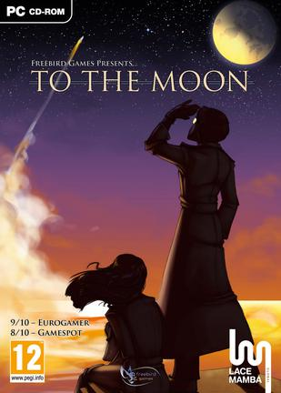
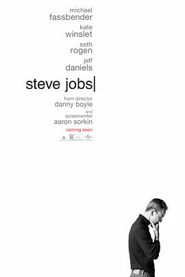
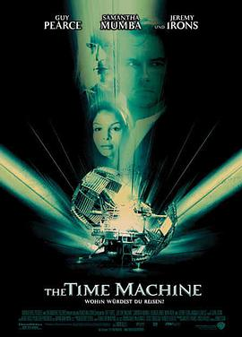
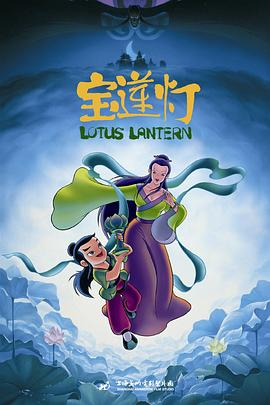

2016-03-30 14:54:47
豆瓣原页

玩过 去月球 To the Moon ★★★★☆
伴随轻盈乐声的故事美就美在，有缘人终会相聚。从事实中忘记约定仍然能结为伴侣开始，到抹去女主在男主脑内的记忆然后在工作时相聚并且一起作为宇航员飞向月球。男主的记忆从残缺不齐改到堪称完美~无不令人动容~
值得一提的是，制作商说购买游戏音乐集的一半费用将捐给自闭症…
2016-03-28 16:55:11
豆瓣原页
看过 少女们向荒野进发 OVA / 少女たちは荒野を目指す OVA ★★★★★
若要前往荒野，补充营养是必不可少的，吃饭去喽~（汉化组已经先睹为快~）
2016-03-27 23:11:21
豆瓣原页
看过 从前有座灵剑山 / 霊剣山 星屑たちの宴 ★★★★☆
哎，又是烂尾……还不如不看最后一集，画面崩、剧情节奏把握的不好，而且全篇动画太无厘头了！但是4星国漫鼓励~
2016-03-27 23:01:03
豆瓣原页
看过 少女们向荒野进发 / 少女たちは荒野を目指す ★★★★★
这个世界是无垠的荒野吧，仅凭兴趣是无法生存的，只有燃烧着野心的人，才能在这残酷的荒野中向梦想发起挑战！
2016-03-25 20:52:39
豆瓣原页
看过 疯狂动物城 / Zootopia ★★★★★
好看^ω^
2016-03-15 00:08:03
豆瓣原页
看过 泰坦尼克号 / Titanic ★★★★★
瞻仰已久，不愧神作，3小时意犹未尽。The Heart of Ocean的处理真心好，结局也是回味无穷~感人的不只是爱情，而是更大的爱：兄弟之爱、母子之爱、事业之爱（4个音乐家）、男女之爱~
2016-03-01 23:50:51
豆瓣原页
看过 怪物之子 / バケモノの子 ★★★★★
学霸男女养成记！！！我喜欢！！！另外男主的成长也是很有代入感，泪目，尤其是后面熊徹躺在病床上时，第三人称说九太这孩子成长的时候，泪目；然后后就是1:46:12熊徹转世为剑，也是泪目，代入感！！！非常有代入感的电影看着就是泪目啊，学霸心理刻画的也特别好，完结撒花之前男女主…
2016-02-13 22:18:25
豆瓣原页

看过 史蒂夫·乔布斯 / Steve Jobs ★★★☆☆
三段故事，分别使用三种不同的介质拍摄，确实耳目一新，但是嘴炮真的是听的昏昏欲睡，说得太快也听不清 orz 还得看字幕，眼睛好累
2016-02-09 17:39:30
豆瓣原页
看过 功夫熊猫3 / Kung Fu Panda 3 ★★★★★
中国配音良心啊>3< 看完还蛮感动，亲情、责任的元素尽致，高潮部分情节再多谢就好了~而且看的时候感觉口型和中文对的特别好啊！不过瘾😁
2016-02-05 16:49:34
豆瓣原页

看过 时间机器 / The Time Machine ★★★☆☆
前面还蛮有兴趣的，一直到2037。再后面80万年后就有点怪怪的感觉了，跑题了还是？！不过最终能找到答案也是可喜可贺~要是我说，Emma真的应该坐时间机器一起回到未来！唉，推荐大家看 About Time~
2016-01-17 12:37:11
豆瓣原页
想看 美人鱼
老周从来不会让人失望(^з^)
2016-01-14 13:43:31
豆瓣原页
读过 正则表达式必知必会（修订版） ★★★★★
短小精悍！特别易懂的入门书！而且后面提到信用卡的Mod10算法我有查到了身份证号码的校验算法，哈哈，以后可以编身份证号码喽！
2016-01-10 17:24:03
豆瓣原页
读过 写给大家看的设计书（第4版） ★★★★★
Rich examples explains the four design principles: Contrast, Repetition, Alignment, and Proximity. And it is easily to find good d…
2016-01-07 13:32:33
豆瓣原页
看过 小王子 / Le Petit Prince ★★★★★
各方面都很完美&唯美，故事有一定哲学意味，但是连通了孩子与大人，一切都那么地温馨……不说了，我的手表响了，“浪费”了我这么多时间……
2016-01-06 21:30:56
豆瓣原页
看过 狐妖小红娘剧场版：下沙 ★★★★★
真的是国漫良心之作！虽然各方面和日本动画相比稍显稚嫩个，但是5分对于国漫来说是当之无愧的！各方面都是相当棒！
2015-12-30 23:11:26
豆瓣原页
看过 东京教父 / 東京ゴッドファーザーズ ★★★★☆
教父：在婴儿或幼儿受洗礼时，赐以教名，并保证承担其宗教教育的人。
很有趣的电影，最后开放式大团圆结尾很棒~
2015-12-29 14:17:40
豆瓣原页
看过 寻龙诀 ★★★★☆
剧情比较简单 =。= 场景做的很不错，特效有点差，主要体现在配色缺乏美感，太生硬，当然是和《九层妖塔》比较咯，配色是硬伤，如果配色弄好了完全5星！
2015-12-28 21:42:13
豆瓣原页
看过 火星救援 / The Martian ★★★★☆
精彩，画面做的也特别壮观！
2015-12-28 14:43:07
豆瓣原页
看过 红辣椒 / パプリカ ★★★★★
特别精彩，天马行空，不需要严谨
2015-12-27 20:03:53
豆瓣原页
看过 傲慢与偏见 / Pride & Prejudice ★★★★★
堪称完美的剧情，恰到好处的表演，以及不绝于耳的古典钢琴曲，太喜欢这部电影了，淡淡的感触，虽不置感动落泪，但是内心已经融化了！不愧是经典！
2015-12-12 13:39:23
豆瓣原页
喜欢日记 我是如何爬上语文卷子认识了一班高中生…
2015-12-10 22:21:16
豆瓣原页
看过 真实魔鬼游戏 / リアル鬼ごっこ ★★★☆☆
看完这部影评《妥协的救赎》瞬间觉得这个电影碉堡了！可惜导演表达的太隐晦了 orz 很不错的设定，如果按照那个影评来理解的话，这部电影可以4星
2015-12-09 15:29:48
豆瓣原页
在读 数学之美 ★★★★★
大快朵颐！
2015-12-09 00:26:21
豆瓣原页
收藏图书到豆列 计算机-人工智能实践 数学之美
很有趣的机器学习科普书~
2015-12-04 20:07:09
豆瓣原页
想读 Effective C#
2015-12-04 09:41:06
豆瓣原页
听过 宝莲灯 ★★★★★
当时买的正版磁带！父母大人真是体贴 _(:3」∠)_ 百听不厌，回去我要擦擦灰！
2015-12-04 09:22:19
豆瓣原页

看过 宝莲灯 ★★★★★
今天看到一个豆瓣热门，说你进电影院看的第一部电影是什么，我发现我真的很辛福，我出生在一个幸福的家庭，同时为他们感到悲哀，这群小毛孩肯定和对象一块看的第一场电影，切(≧▽≦)
2015-12-02 23:41:02
豆瓣原页
想读 十字路口
考生来读读这本说考试的小说吧😁 竟然有中文版了，我要找找！
2015-12-02 11:01:06
豆瓣原页
在读 傲慢与偏见 ★★★★☆
原来这个像政治剧的名字下书写着的是个符合我口味的纯爱作ww 正在读原版~